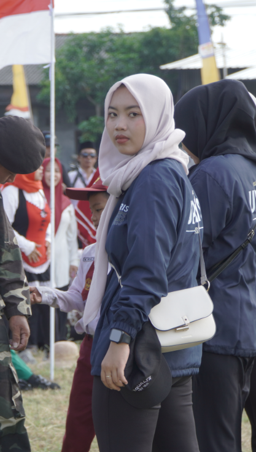
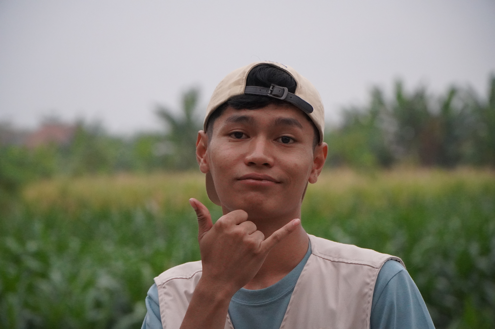

17 Jiwa, 1 Pengabdian

"Bukan tentang seberapa megah tempatnya, melainkan tentang siapa saja yang berjuang bersama di dalamnya."
 '26 08 14
'26 08 14
Pak Kordes kita ni bos 🫡
Fadhil
"Paling sering pusing nyocokin jadwal rapat sama perangkat desa, tapi tetep paling santai kalo diajak cari makan malem-malem."
"Gimana ges, proker aman kan?"
 '26 08 14
'26 08 14
Korcam keliling Mranggen 🛵
Ivan Gede
"Jarang keliatan di posko pas siang gara-gara mondar-mandir koordinasi se-kecamatan, tapi kalo pulang selalu bawa kabar penting."
"Bentar ya, gue meluncur ke posko sebelah dulu."
 '26 08 14
'26 08 14
Tukang nagih bab laporan ✍️
Putri DJ
"Paling disiplin kalo udah urusan ketik laporan akhir. Kalo dia udah buka laptop, satu posko auto sungkan kalo mau mager."
"Revisi bab 3 kirim malem ini ya rek, jangan telat!"
 '26 08 14
'26 08 14
Partner persuratan posko 📋
Nisa
"Kolektor tanda tangan warga dan kepala desa. Surat izin keluar, proposal jalan, absensi beres tanpa ribet."
"Yang belum tanda tangan absensi cepetan sini."
 '26 08 14
'26 08 14
Menteri Keuangan Sandran 💰
Marsha
"Paling ditakuti pas nyodorin daftar kas mingguan. Tapi berkat ketelitiannya, uang saku proker kita gak pernah minus sampai hari penarikan."
"Uang kas minggu ini mana? Jangan pura-pura lupa ya!"
 '26 08 14
'26 08 14
Pawang belanja pasar subuh 🥬
Rezal
"Jagonya nawar harga bawang sama sayuran di pasar pagi. Kuitansi belanjaan posko tersimpan rapi tanpa selisih serupiah pun."
"Tenang, tadi dapet diskon seribu dari yu Darmi."
 '26 08 14
'26 08 14
Otak rundown acara 🎪
Sella
"Dari lomba tarik tambang 17-an sampai panggung perpisahan, dialah yang ngatur waktu biar gak molor. Walaupun pas acara kadang ikutan panik sendiri."
"Rundown udah fiks ya, awas ada yang molor!"

'26 08 14MC heboh serba bisa 🎤
Cahya
"Kalo dia udah pegang mic di panggung lapangan, warga sekampung gak ada yang bisa nahan tawa. Suaranya bikin suasana posko selalu rame."
"Tarik mang! Semangat buat warga Sandran!"
 '26 08 14
'26 08 14
Duta silaturahmi RT 🤝
Fauzi
"Paling gampang akrab sama bapak-bapak warga. Tiap sore ada aja rumah sesepuh yang disowani, pulang-pulang pasti bawa pisang atau gorengan."
"Gua sowan dulu ke pak RT ya rek."
 '26 08 14
'26 08 14
Kakak favorit bocil desa 👧
Lia
"Tiap sore posko didatengin adik-adik Desa Waru cuma buat ketemu dan belajar bareng kak Lia. Auranya adem dan bikin posko gak pernah sepi."
"Adek-adek jangan berantem ya, sini belajar bareng."
 '26 08 14
'26 08 14
Mata lensa kenangan posko 📸
Puspa
"Kamera selalu stand-by di pundak. Ratusan foto candid teman-teman posko dari yang estetik sampai yang aib semuanya ada di memori kameranya."
"1, 2, 3... senyum yang bener dong woy!"
 '26 08 14
'26 08 14
Kepala Dapur Andalan 🍳
Puput
"Pahlawan sejati perut 17 anggota posko. Dari sayur lodeh, ayam goreng, sampai sambal terasi buatannya gak pernah ada yang bersisa di meja makan."
"Makan siang udah siap rek, cepetan ambil sebelum abis!"
 '26 08 14
'26 08 14
Barista teh hangat posko ☕
Vina
"Partner setia dapur yang selalu sedia cemilan pas rapat malam mulai suntuk. Kalo galon air atau persediaan gula posko habis, dia yang paling sigap."
"Gua bikin kopi sama teh ya, yang mau angkat tangan!"
 '26 08 14
'26 08 14
IT Guy perakit website ini 💻
Adam
"Siang bantu pasang sound system sama terpal lapangan, malemnya begadang ngetik kodingan buat bikin website galeri kenangan posko ini."
"Web-nya udah gue update ya, coba cek di HP masing-masing!"
 '26 08 14
'26 08 14
Pawang sound & kabel rol 🔊
Irwan
"Kalo urusan mic mendengung atau proyektor gak mau nyala, dialah yang langsung lari benerin. Tenaganya gak ada habisnya pas angkut barang."
"Tes tes 1 2 3... kabel mic aman bro!"
 '26 08 14
'26 08 14
Ibu kost penjaga posko 🧹
Meli
"Yang paling rajin ngingetin jadwal piket sapu teras sama cuci piring. Kalo posko berantakan, suara omelannya bikin seisi rumah langsung gerak."
"Piring kotor di wastafel cucian siapa tuh? Jangan dibiarin!"

'26 08 14Raja candid & video reels 🎬
Ivanda
"Gak pernah lepas dari kamera HP buat bikin video after movie dan reels instagram. Semua momen random kita ber-17 kesimpan rapi di galerinya."
"Bagus nih view-nya, bentar gue videoin buat after movie!"
Jejak Langkah Pengabdian
Rangkaian kisah perjalanan dari penerjunan hingga penarikan di Desa Waru.
Penerjunan & Sowan Balai Desa
Hari pertama tiba di Desa Waru, perkenalan resmi dengan Kepala Desa beserta perangkat, dan penataan posko tercinta di Dusun Sandran.
Eksekusi Program Kerja
Pelatihan digital, bimbingan belajar anak-anak desa, penyuluhan kesehatan keluarga, serta kolaborasi aktif bersama masyarakat.
Semarak Kemerdekaan HUT RI
Upacara khidmat kemerdekaan bersama masyarakat, parade lomba rakyat dusun yang riuh, dan pawai kebersamaan.
Malam Pentas Seni & Perpisahan
Malam haru bertabur tawa bersama pemuda karang taruna, penampilan kreasi seni adik-adik desa, dan perpisahan penuh kenangan.
Penarikan Resmi Posko
Pengabdian tuntas dengan membawa sejuta kenangan berharga dan persaudaraan baru yang abadi.
Galeri Arsip Foto
Pilih kategori folder untuk melihat dokumentasi kegiatan secara langsung.
KKN Posko Awards 2026
Penghargaan kehormatan berdasarkan fakta unik selama 35 hari bersama di Desa Waru.
The Early Bird
Ter-Pagi Bangun
"Sosok yang membuka pintu posko pertama kali dan sudah rapi sebelum yang lain bangun."
Duta Pos Ronda
Suhu Ngopi Malam
"Paling akrab dengan bapak-bapak pos ronda dan paling betah nongkrong sampai fajar."
Masterchef Posko
Juara Dapur
"Penyelamat rasa lapar tengah malam dengan racikan mie rebus dan telur dadar krispi."
Sleeping Beauty
Rebahan Di Mana Saja
"Di karpet, di kursi balai desa, sampai di teras posko tetap tertidur pulas tanpa gangguan."
After Movie KKN Waru 2026
Rangkuman visual kebersamaan kita selama mengabdi di Desa Waru.
Posko Sandran, Desa Waru
RT 03 RW 02 Sandran, Waru, Mranggen, Demak — Saksi bisu 35 hari kebersamaan kita.
Posko KKN 36 Sandran
RT.03 / RW.02 Sandran, Waru, Kec. Mranggen, Kab. Demak 59567
Buku Kenangan Posko
Tuliskan kesan, lelucon rahasia, atau pesan perpisahan untuk kita semua.